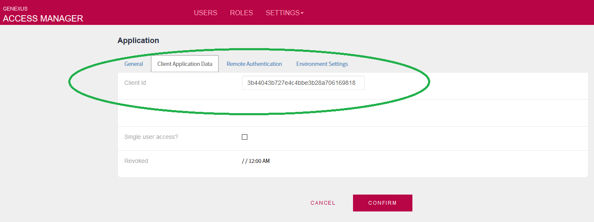
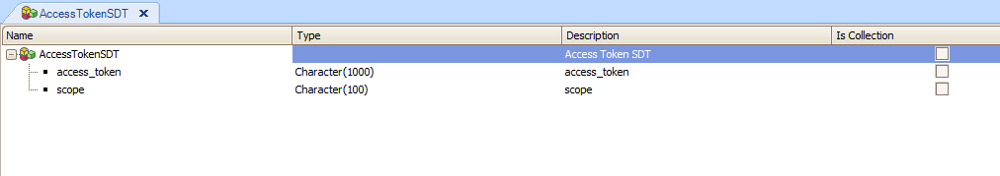

REST Web Services security is based on Oauth.
Several applications usually expose data update services and data recovery services through REST, so security is very important where privacy of data is a concern.
In GeneXus, the solution to this problem is to use GAM (which hides to the final user the complexity of OAuth technology).
The GAM API provides a way to restrict access to users to REST Web Services defined in the application.
The following is a guide that explains the steps to follow to incorporate security to your REST web services, and the way to consume these web services from a GeneXus application also. The way to consume web services from a non-GeneXus application should follow the same main idea.
In this document, we explain the case in which the token is obtained manually using HTTP, since the consumer application hasn't got GAM, or is of a version lower than GeneXus 16 u7 (GAM Remote Rest is not supported)
1. Create the REST Web Services of your application. The REST web services can be Business Components, Data providers, or procedures, and can expose POST, PUT, DELETE, GET methods.
2. Check the security property in the Knowledge Base (Enable Integrated Security Property). Afterward, GAM objects will be incorporated into the KB, and a reorganization will be done to create GAM repository, and initialization of this repository will also be done. For more details see GeneXus Administration of GAM Repository.
3. Create an application using GAM API (or just using the GAM Backend), in order to identify the "REST web services application" within the GAM repository.
4. Create a user which will have access rights to your application. If you want to restrict access to some users, you need to configure GAM Permissions.
Note that the GAM Examples include a web application (Backend) which facilitates the administration of Applications, GAM Roles, Users, and Permissions.
5. In order to enable access to the REST services, you need to provide the Client_Id, user, and password to the consumer.
Take a look at "GAMExampleApplicationEntry" object (which belongs to the GAM Examples), to see how to use the GAM API to get the Client_Id.
In particular, if you run GAMExampleWWApplications, when you edit the Application properties of any Application of the Repository, you can see the Client_Id of the Application.

In Oauth there exists the concept of Client (application), User (userId, userPwd), and permissions (Scope= Read, Write,FullControl..).
A GeneXus application which is configured to use GAM; generates a Client Id for each Application.
To consume a secure GX REST web service you should:
1. Be provided with the Client_Id of the Application, user, and password with access rights to this application.
2. Before trying to POST to the web service, you need first to get an access_token. To get this access_token, you have to POST the Client_Id and user credentials or to use the GAMRepository.GetOauthAccessToken() method. The detailed steps are as follows:
a. First, get the access_token.
HTTP://<SERVER>/<APPDIR>/oauth/access_token
with this body:
client_id=<client_id>&grant_type=password&scope=FullControl&username=<user_name>&password=<user_pwd>
Example body:
client_id=f719771ad52a42919a221bc796d0d6b0&granttype=password&scope=FullControl&username=admin&password=admin123
In the HTTPResponse, there'll be a JSON response with the access_token, as this example shows:
{
"access token" : "c9919e10e118" << Access token which will have to be used in all subsequent calls
"scope" : "FullControl"
}
GAMRepository.GetOauthAccessToken(&UserName, &Password, &GAMLoginAdditionalParameters, &GAMOauthAdditionalParameters, &GAMSession, &GAMErrors)
Example:
&GAMOauthAdditionalParameters.ClientId = "f719771ad52a42919a221bc796d0d6b0" &GAMOauthAdditionalParameters.ClientSecret = &ClientSecret &GAMLoginAdditionalParameters.AuthenticationTypeName = !"local" &AccessTokenSDT = GAMRepository.GetOauthAccessToken(!"admin", !"admin123",&GAMLoginAdditionalParameters,&GAMOauthAdditionalParameters,&GAMSession,&GAMErrors)
b. Then all the calls to the REST web services should include this header (following the same example):
Authorization: OAuth c9919e10e118
The following is a complete sample code that shows how to GET de products list ("DPProduct" is a Data Provider exposed as REST web service), which is a secure web service (GAM is enabled in the KB).
The Client Id is taken from the application defined automatically in GAM Backend.
We use HTTPClient data type to consume the REST web service.
//First get the access_token through an HTTP POST
&addstring ='client_id=be47d883307446b4b93fea47f9264f88&grant_type=password&scope=FullControl&username=test&password=test'
&httpclient.Host= &server
&httpclient.Port = &port
&httpclient.BaseUrl = &urlbase + '/oauth/'
&httpclient.AddHeader("Content-Type", "application/x-www-form-urlencoded")
&httpclient.AddString(&addstring)
&httpclient.Execute('POST','access_token')
&httpstatus = &httpclient.StatusCode
msg('Http status: ' + &httpstatus,status)
&result = &httpclient.ToString()
&AccessTokenSDT.FromJson(&result) // Load the AccessToken in a SDT which has this structure (*)
//call DPProduct web service
&httpclient.BaseUrl = &urlbase + '/rest/'
&httpclient.AddHeader("Content-Type", "application/json")
&httpclient.AddHeader('Authorization','OAuth ' + &AccessTokenSDT.access_token)
&httpclient.AddHeader("GENEXUS-AGENT","SmartDevice Application")
&httpclient.Execute('GET','DPProduct')
Another example, using the GAMRepository.GetOauthAccessToken() method
//First get the access_token
&httpclient.Host= &server
&httpclient.Port = &port
&GAMOauthAdditionalParameters.ClientId = "f719771ad52a42919a221bc796d0d6b0"
&GAMOauthAdditionalParameters.ClientSecret = &ClientSecret
&GAMLoginAdditionalParameters.AuthenticationTypeName = !"local"
&AccessTokenSDT = GAMRepository.GetOauthAccessToken(!"admin", !"admin123",&GAMLoginAdditionalParameters,&GAMOauthAdditionalParameters,&GAMSession,&GAMErrors)
//call DPProduct web service
&httpclient.BaseUrl = &urlbase + '/rest/'
&httpclient.AddHeader("Content-Type", "application/json")
&httpclient.AddHeader('Authorization','OAuth ' + &AccessTokenSDT.access_token)
&httpclient.AddHeader("GENEXUS-AGENT","SmartDevice Application")
&httpclient.Execute('GET','DPProduct')
Note:
Since GeneXus 16 upgrade 4 you can also get the user information when calling a secure Rest service. For more information on this topic, see SAC 45678.
In the case that the service runs on a server which serves multiple tenants (the GAM has n repositories, each for a different tenant), you have to add some additional information to the body of the HTTP Post in order to establish which repository GAM should connect to. In this case, the connection.gam on the server has one Repository connections for each Repository.
This is done using the additional_parametes of the body, which is a JSON including the AuthenticationTypeName and the Repository (the GUID of the Repository you're going to connect to).
Example of an HTTP post to access_token service including the additional_parameters mentioned:
POST /Customer1.NetEnvironment/oauth/access_token HTTP/1.1
GeneXus-Agent: SmartDevice Application
Content-Length: 248
Content-Type: application/x-www-form-urlencoded
Host: 10.0.2.2:88
client_id=ad80c07c0a1046029c0655cdd9d99493&grant_type=password&scope=FullControl&username=adminfull&password=adminfull&additional_parameters={"AuthenticationTypeName":"local","Repository":"1e89a9ca-bc52-482b-a344-c4cda4a9cc8f"}
Notes:
The Genexus-Agent:"SmartDevice Application" header is mandatory since Xev2u4.
The grant_type in the json body sent to the "access_token" service maps to the Authentication Types for GAM, so "password" means Local Authentication, and the other possible values are Facebook, Twitter, Google, externalwebservice, custom, and device (for Auto Registration).
In case that you get "Error39: application not found", consider adding the following header: Content-Type: application/x-www-form-urlencoded

Note that the user information can be obtained after the successful authentication, using the GAMUser static methods.
It's recommended to use HTTPS so the communication channel between client and server is secure.
Secure Native Mobile applications architecture
Troubleshooting secure rest services
| Backlinks | |
| GAM - Authentication Scenarios | GAM - Remote Rest Authentication type (Oauth 2.0) |
| Toc:Rest web services in GeneXus | |
| Secure Native Mobile applications architecture | Secure REST API using GAM |